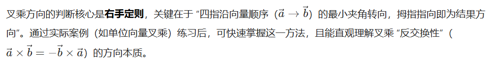
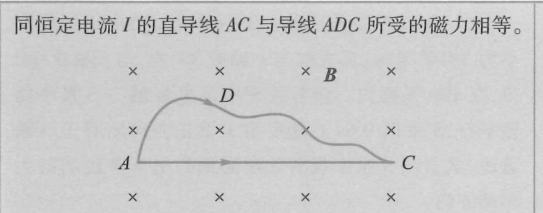

Lec 14 电流和磁场¶
1 公式¶
| 项目 | 公式 |
|---|---|
| 电流密度 | \(j = \frac{\mathrm{d}I}{\mathrm{d}S_{\perp}} = \frac{\mathrm{d}I}{\mathrm{d}S\cos\theta}\)，\(\boldsymbol{j}= \gamma \boldsymbol{E} = -en\boldsymbol{v}_d\) 注：漂移速度 \(v_d\) 为定向运动的平均速度，\(n\) 为自由电子数密度 |
| 电流 | \(I = \frac{\mathrm{d}q}{\mathrm{d}t} = \int_{S} \boldsymbol{j} \cdot \mathrm{d}\boldsymbol{S} = env_d \Delta S\) |
| 电动势 | \(\mathscr{E}_{\text{AB}} = \frac{W_{AB}}{q} = \int_{\text{A(内)}}^{\text{B}} \boldsymbol{E}_{\text{K}} \cdot \mathrm{d}\boldsymbol{l} = \oint_{L} \boldsymbol{E}_{\text{K}} \cdot \mathrm{d}\boldsymbol{l}\) 注：式中 \(\boldsymbol{E}_{\text{K}}\) 称为非静电性电场强度 注：与电势差有关的是静电力做功，与电源有关的是非静电场力 \(F_{\text{K}} = q\boldsymbol{E}_{\text{K}}\) 做功。静电场是保守力场，\(\boldsymbol{E}_{\text{K}}\) 是非保守力场 |
| 电荷连续性方程 | \(\oiint_{S} \vec{j} \cdot \mathrm{d} \vec{S}=-\frac{\mathrm{d} q}{\mathrm{~d} t}\) 注：电流稳恒条件为 \(\oiint_{S} \vec{j} \cdot \mathrm{d} \vec{S}=0\) |
| 路端电压 | \(U = \mathscr{E} - IR\) |
| 欧姆定律 | \(I = \frac{U}{R}\) |
| 电阻 | \(R = \rho \frac{l}{S}\) 注：\(\rho\) 为电阻率，单位为 \(\Omega \cdot \text{m}\)；其倒数 \(\gamma = 1/\rho\) 为电导率，单位为 \(\text{S/m}\) |
| 磁力 | \(F_{\mathrm{m}} = k \frac{I_{1} I_{2}}{b} = \frac{\mu_{0} I_{1} I_{2}}{2 \pi b}\) 注：\(F_{\mathrm{m}}\) 指平行载流导线中的每一根在单位长度上所受到的磁力，\(b\) 为两导线间的距离，\(\mu_{0}=4 \pi \times 10^{-7} \mathrm{~N} / \mathrm{A}^{2}\) 称为磁学常量，也常称为真空磁导率 |
| 磁感应强度 | \(B = \frac{F_{\text{m, max}}}{qv}\) 注：电流的方向与磁感线的方向服从右手螺旋定律 |
| 运动电荷的磁场 | |
| 磁场中运动电荷受力大小 | \(\boldsymbol{F} = q\boldsymbol{v} \times \boldsymbol{B} = qvB\sin\theta\) |
| 运动电荷的电场 | \(E = \frac{1}{4\pi \varepsilon_{0}} \frac{q}{r^{2}} \frac{1 - v^{2}/c^{2}}{[1 - (v^{2}/c^{2}) \sin^{2}\theta]^{3/2}} = \frac{1}{4\pi \varepsilon_{0}} \frac{q}{r^{2}}\) \(（v \ll c）\) |
| 毕奥-萨伐尔定律 | \(\boldsymbol{B} = \oint \mathrm{d}\boldsymbol{B} = \oint \frac{\mu_{0}}{4\pi} \frac{I\mathrm{d}\boldsymbol{l} \times \boldsymbol{e}_{r}}{r^{2}}\) 注：\(\boldsymbol{e}_{r}\) 是源点（电流元）到场点 $ P $ 的径矢 \(\boldsymbol{r}\) 的单位矢量 |
| 磁矩 | \(\boldsymbol{p}_{\text{m}} = NIS\boldsymbol{e_n}\) 注：\(N\) 为线圈匝数，\(S\) 为载流线圈面积，\(\boldsymbol{e_n}\) 为载流线圈中与电流成右手螺旋关系的法向单位矢量 |
| 磁通量 | \(\varPhi_{\text{m}} = \int_{S} B\cos\theta \text{d}S = \int_{S} \boldsymbol{B} \cdot \text{d}\boldsymbol{S}\) 注：向外是正 |
| 磁场的高斯定理 | \(\oint_{S} \boldsymbol{B} \cdot \text{d}\boldsymbol{S} = 0\) 注：磁场中的高斯定理反映了无源场的特性，电场中的高斯定理反映了有源场的特性 |
| 安培环路定理 | \(\oint_L \boldsymbol{B} \cdot d\boldsymbol{l} = \mu_0 \sum\limits_{(L\text{内})} I\) 注：当穿过闭合环路 \(L\) 的电流方向与环路 \(L\) 的绕行方向服从右手螺旋定则时， \(I\) 为正；反之 \(I\) 为负。若电流 \(I\) 不穿过环路 \(L\) ，则对上式右端无贡献 |
| 洛伦兹力 | \(\boldsymbol{F}_{\text{m}} = q\boldsymbol{v} \times \boldsymbol{B}= qvB\sin\theta\) |
| 安培力 | \(d\boldsymbol{F}=Id\boldsymbol{l}\times \boldsymbol{B}\) |
| 磁力矩 | \(\boldsymbol{M}=\boldsymbol{p_m}\times\boldsymbol{B}=NISBsin\theta\) 注：适用于均匀磁场中任意形状的平面载流线圈 注：当 \(\boldsymbol{p_m}\) 与 \(\boldsymbol{B}\) 的夹角 \(\phi=\pi\) 时，\(\boldsymbol{M}=0\) 但线圈处于不稳定平衡状态 |
| 磁力做功 | \(A=I\Delta\Phi\) |

| 静电场 | 稳恒电场 |
|---|---|
| 静电平衡时，导体中 \(\boldsymbol{E}{=}0\)，导体为等势体，电流 \(I{=}0\) | 导体中 \(\boldsymbol{E}{\neq }0\)，有电流 \(I \ne 0\) |
| 类型 | 磁场 | 示意图 |
|---|---|---|
| 长直圆柱形载流导线内外的磁场 | 电流面分布：\(B = \begin{cases} 0 & (r < R) \\ \frac{\mu_{0}I}{2 \pi r} & (r > R) \end{cases}\) 电流体分布：\(B = \begin{cases} \frac{\mu_{0}Ir}{2 \pi R^2} & (r < R) \\ \frac{\mu_{0}I}{2 \pi r} & (r > R) \end{cases}\) |
 |
| 载流螺绕环内的磁场 | \(B = \frac{\mu_0 NI}{2\pi r}\) \(\quad\) （\(N\) 为环上线圈的总匝数） \(B = \mu_0 nI\) \(\quad\) （\(r_2 - r_1\) 远小于环的平均半径 \(r\) 时成立，其中 \(n\) 为螺绕环单位长度上的匝数） |
 |
| 载流长直螺线管内的磁场 | \(B = \mu_0 nI\) |  |
| 无限大载流导体薄板 | \(B=\frac{\mu_0}{2}j\) 注：\(j\) 为电流面密度 |
 |
| 类型 | 磁场 | 示意图 |
|---|---|---|
| 载流直导线 | $B = \frac{\mu_{0}I}{4\pi r_{0}}(\cos\theta_{1} - \cos\theta_{2}) $ $B = \frac{\mu_{0}I}{2\pi r_{0}} $（无限长直导线） |
 |
| 载流圆线圈的轴线 | \(B = \frac{\mu_{0} IR^{2}}{2 r^3}\) \(B = \frac{\mu_{0}I}{2R}\) （圆线圈的圆心处） |
 |
| 载流直螺线管内部 | \(B = \frac{\mu_0}{2}nI(\cos\beta_2 - \cos\beta_1)\) \(B = \mu_0 nI\) （\(L>>R\)） \(B = \frac{1}{2} \mu_0 nI\) （长直螺线管上的两端点） |
 |
本章摘要

两个点电荷之间的作用力=磁力+电力
 可做结论
无限长带电圆筒转动后管外磁场强度为零